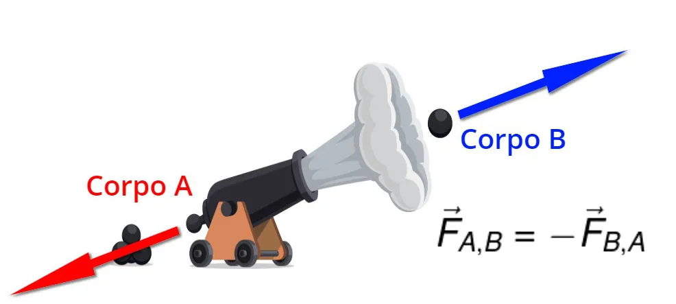

Menu
Leis De Newton
Você já ouviu falar no cara chamado Isaac Newton que certo dia caiu uma maçã na cabeça dele e ele propôs a Lei da
Gravidade, então este mesmo cara (Newton) além de propor várias teorias e ser um dos maiores fisicos que ja se
teve na historia e que contribuiu em todas as áreas de forma gigantesca, ele também propôs três leis que são
fundamentais para a física e inclusive quando você for estudar física Leis de Newton é um assunto indispensável
para a sua vida acadêmica (GOUVEIA, 2023).
.jpeg)
Lei Da Inercia
A primeira Lei de Newton é chamada de princípio da inércia, mas é mais conhecida como Lei da Inércia. (HELERBROCK, Rafael, 2023).
“Segundo Rafael Helerbrock (2023) "A primeira lei de Newton, também conhecida como princípio da inércia, afirma que todo corpo permanece em seu estado de repouso ou em movimento retilíneo e uniforme caso as forças que atuem sobre ele se anulem.”
Mas FISICAMENTE FALANDO, a Lei da Inércia significa que: se algo está parado esse algo pretende ficar parado, até venha alguém mexer nele, exemplo, seu celular, se você deixar ele no sofá ele ficará lá até alguém pegar ele, sem uma força exterior ele continuará parado, e o mesmo se aplica para corpos em movimento, mas para dar um exemplo precisamos ir lá pro espaço, já que lá não tem ar nem gravidade para nos atrapalhar, agora dando o exemplo, voce esta la no espaço e joga uma caneta para qualquer lado, essa caneta irá continuar para sempre viajando na velocidade que você jogou ela até que uma força exterior atravesse o caminho dela(como um asteroide, ou a caneta entrar em órbita de um objeto grande, apesar da massa da caneta não ser suficiente para ela entrar em órbita, ao nao ser que seja de outro objeto pequeno) (HELERBROCK, 2023).
Segunda Lei de Newton: Princípio Fundamental da Dinâmica
A segunda Lei de Newton é o princípio Fundamental da Dinâmica, (HELERBROCK, 2023). “ Segundo Pâmella Raphaella Melo (2023) a segunda lei de Newton determina que se aplicarmos força sobre um objeto, ela produzirá movimento, cuja aceleração é proporcional à sua massa."
Mas FISICAMENTE FALANDO, esta lei diz que você precisa aplicar uma força proporcionalmente a massa do corpo que você quer mover, e também que, a aceleração deste corpo será proporcional a massa (HELERBROCK, 2023). Vamos pensar num exemplo assim: você tem duas bolas num campo de futebol, mas vamos dispensar a grama, ar, e o resto, quero dizer que não vamos levar em consideração atrito. Mas voltando às bolas, você tem uma bola de futebol do seu tamanho, mas com uma massa pequena, e ao lado dela tem uma bola de madeira de uma massa um pouco maior (HELERBROCK, 2023). Pronto, agora vamos a prática, você começa a empurrar a bola de futebol, como ela é leve, você usa pouca força e também a aceleração dela não é muito alta, e se você soltá-la(sem dar impulso) ela não irá muito longe, mas agora vamos a de madeira, você começa a empurrá-la e percebe que precisa de mais força para tirá-la do repouso, mas como você vai para a academia você acaba conseguindo tirá-la do lugar e vai empurrando ela, e com alguns metros de você empurrando ela já pode-se perceber que ela vai aumentando sua velocidade, e de repente você solta ela(sem dar impulso), e então ela percorre muito mais que a bola de futebol (HELERBROCK, 2023). Resumindo é que você precisa fazer mais força para empurrar algo pesado, e pouca força para empurrar algo leve, e também que algo pesado acelera mais que algo leve (HELERBROCK, 2023).

Terceira Lei de Newton-Lei de Ação e Reação
“ Segundo Rafael Helerbrock (2023), a terceira lei de Newton, conhecida como lei da ação e reação, afirma que,
para toda força de ação que é aplicada a um corpo, surge uma força de reação em um corpo diferente. Essa força de
reação tem a mesma intensidade da força de ação e atua na mesma direção, mas com sentido oposto."
Mas FISICAMENTE FALANDO, ela quer dizer que se você aplica uma força a algo ele devolve de alguma forma, posso dar
vários exemplos. O primeiro, se alguém chutar uma pedra e jogá-la longe, mas a pedra também vai “chutar de volta”,
parece estranho, mas calma, ao menos que o alguém seja um robô ao chutar a pedra sente dor, e essa dor é a reação
sobre a ação de chutar. Outro exemplo é quando se precisa empurrar algo pesado, uma geladeira pro caso, se alguém
tentar empurrar ela, a geladeira “devolverá” ficando parada, a geladeira faz força pra ficar parada, a ação é
empurrar, e a reação é ela fazer força pra ficar parada. É só pra deixar claro esses exemplos são figurados, mas
funcionam, até porque pedras e geladeiras no mundo real são seres inanimados.(HELERBROCK, 2023)
